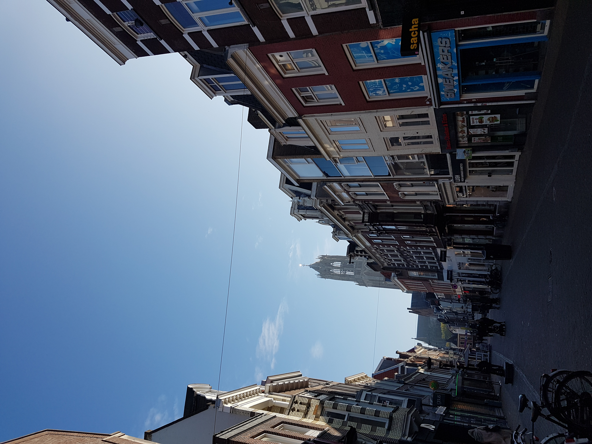
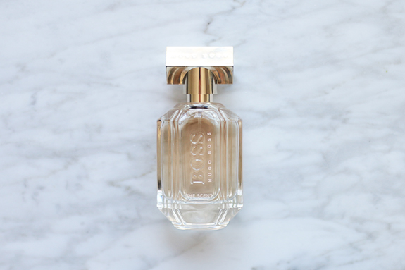

Al een tijdje geleden heb ik met mijn beste vriendinnetje afgesproken om weer een keer een dag weg te gaan. Normaal gesproken doen we dit een aantal keer per jaar, maar het was nu alweer een tijdje geleden. We hadden al snel besloten om naar Utrecht te gaan, omdat we die stad allebei erg leuk en mooi vinden. Ook hebben ze in Utrecht heel veel leuke winkels die ze in Den Bosch niet hebben. Zondagochtend hadden we al vroeg afgesproken, omdat we de trein van half 11 wilde hebben, zodat we optimaal konden genieten van onze dag. Het beloofde een gezellige dag te worden! Waar we niet over na hadden gedacht, was dat de winkels op zondag pas om 12 uur open gaan. Na een leuke treinreis kwamen we aan op Utrecht Centraal en toen viel het ons al op dat het eigenlijk helemaal niet zo heel druk was. Normaal gesproken zie je hordes met mensen lopen, maar dit keer viel het heel erg mee. Toen we uiteindelijk door Hoog Catharijne liepen, kwamen we erachter dat alle winkels gesloten waren. Ik was in eerste instantie wel een beetje gestresst, omdat ik dacht dat we naar Utrecht waren gegaan zonder dat het überhaupt koopzondag zou zijn. Ik was best opgelucht toen het bleek dat dit niet het geval was, haha! Lachend liepen we door de lege straten en keken een beetje rond.
 |
 |
|---|
We besloten om naar de Dom te gaan en wat fotos te maken. Vervolgens hebben we een rondje door de stad gemaakt. We waren tenslotte meer dan een uur te vroeg! Uiteindelijk zijn we in de Mac gaan zitten om te wachten totdat de winkels om 12 uur zouden openen. Precies om 12:01 uur waren we bij de eerste winkel binnen. We hebben de hele middag een beetje rondgekeken. Bij de Douglas heb ik een heerlijk geurtje van Hugo Boss gekocht, genaamd 'The Scent for Her'. Verder heb ik niet heel veel meer gescoord, omdat ik de collectie van de verschillende winkels niet zo leuk vond.

Rond half 6 hebben we de trein terug naar Den Bosch gepakt.
We zijn toen lekker gaan eten bij het restaurantje ‘Al Mundo’. We hadden een heel gezellig tafeltje voor twee en het was een mooie afsluiter van de dag!
Na anderhalf uur gezeten en gekletst te hebben, hebben we de trein naar Oost gepakt en zijn we naar huis gegaan.
Het was een geweldige dag!
x Fenna